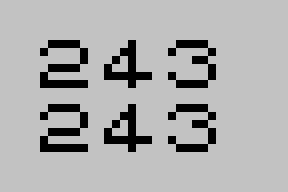
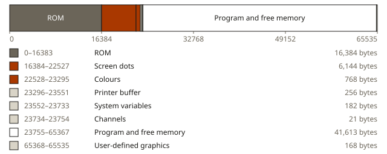
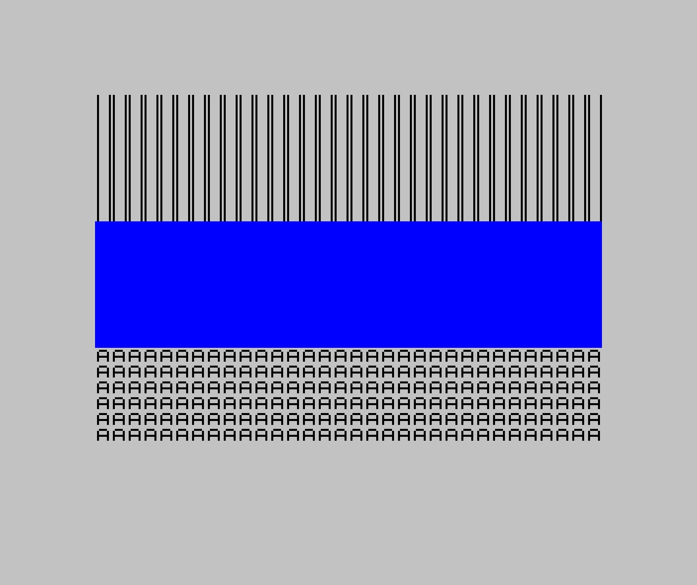
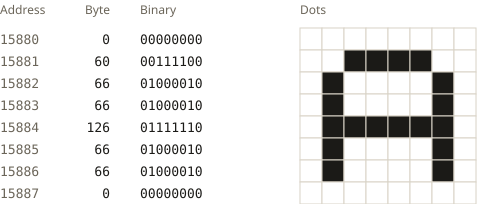
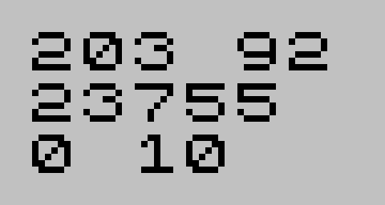
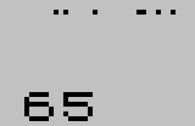
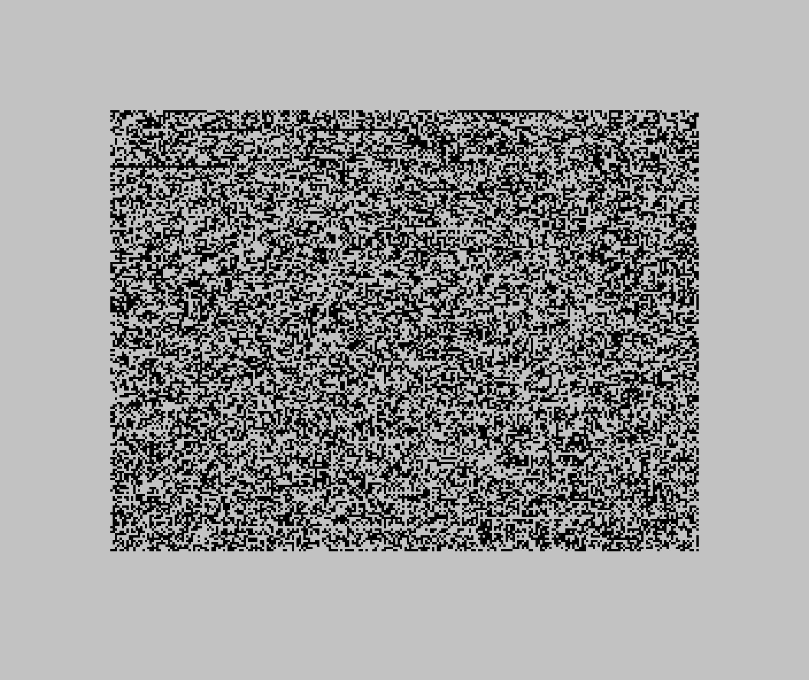

10 PRINT PEEK 0
20 POKE 0,1
30 PRINT PEEK 0
Chapter 2What the Machine Actually Sees
Before we can talk about programs, we need to talk about what a program is made of. And to do that, we need to look at the computer the way the computer looks at itself.
It isn’t going to be flattering.
A row of boxes
The Spectrum’s own manual describes memory as a row of boxes. Each box has a number on the front, its address, starting at 0. Each box holds one number between 0 and 255. Some of the boxes have glass lids: you can see what’s inside, but you can’t change it. Those are the ROM. The rest you can open, and put a different number in. Those are the RAM.
On a 48K Spectrum there are 65,536 boxes. The first 16,384 are ROM. The rest, from address 16384 to the end, are RAM.
The glass lids are real. This program reads the very first box, tries to put a 1 in it, and reads it again.

Before and after the POKE.
Both times, the box holds 243. The POKE didn’t cause an error. It just didn’t open the lid. That 243, as it happens, is the first number the processor reads when the Spectrum is switched on; chapter 11 comes back to it.
Most of the RAM has a job before you’ve typed a thing. This is how a 48K Spectrum shares out its boxes just after it’s switched on, read from the machine itself.

A 48K Spectrum’s memory just after it’s switched on, to scale.
A quarter of the boxes are ROM. The next 6,912 hold the picture: 6,144 for the dots and 768 for their colours, and chapters 6 and 7 are about those. After that come a few small areas the ROM keeps for its own use, such as the system variables, where it notes things like where your program starts. Then there’s your program, and everything above it is free, up to 168 boxes at the very top that hold the patterns for characters you can design yourself. Come back to this picture whenever a chapter mentions an address.
The number in a box is called a byte. You’ll see it written three ways in this book: as an ordinary number, like 65; in binary, like 01000001, which shows the eight individual on-or-off switches the byte is made of; and in hexadecimal, like $41, which is a compact way of writing binary that programmers prefer. They’re three spellings of the same thing. Appendix B explains how they relate, if you want to know, but you don’t need to.
That’s all memory is: boxes, addresses and bytes. Everything a Spectrum does, from BASIC to games to the picture on your television, is the processor and the ULA reading and changing the numbers in those boxes.
What a byte means
Here’s the question this chapter is really about. If you open a box and find the number 65 inside, what does it mean?
The honest answer is: nothing. Not yet.
A byte doesn’t carry a label saying what it’s for. There’s nothing in the box except the number. Whatever 65 means, it means because of where it is and what reads it.
You don’t have to take that on trust. Here’s what happens when the same byte, 65, is put in three different places on a Spectrum.

The byte 65 three times: as pixels in the top third of the screen, as colour in the middle third, and as a letter at the bottom.
At the top, 65 has been written into the part of memory the ULA turns into dots on the screen. In binary, 65 is 01000001, and each 1 becomes a dot of ink: one dot near the left of every eight, one at the far right. Repeat that across the screen and you get stripes.
In the middle, 65 has been written into the part of memory the ULA reads for colour. There, the eight switches are read as instructions about colour: the first means “flash”, the second “bright”, the next three choose the background colour and the last three choose the colour of the dots. 01000001 reads as: don’t flash, be bright, black background, blue dots. Every dot in that band is switched on, so you see bright blue.
At the bottom, the program asked BASIC to print the character whose number is 65. BASIC looked it up in the Spectrum’s character set, where 65 is the capital letter A.
The character set is bytes too. Near the end of the ROM, the Spectrum keeps eight bytes for every character it can print, one for each row of its dots. These are the eight for A, read from a Spectrum’s ROM.

The capital A, as the ROM stores it: eight bytes, one for each row of dots.
Every 1 is a dot of ink and every 0 is paper. To print an A, the ROM copies those eight bytes into the part of memory the ULA turns into dots. That’s all a letter is to a Spectrum: eight numbers, copied to the right place.
Same number, three places, three completely different results. The byte didn’t change. Only the reader did.
Bigger than a box
A box holds a number from 0 to 255. Plenty of things need bigger numbers than that, starting with addresses: there are 65,536 of them. The manual’s answer is that “an address can be stored as two bytes”.
The ROM keeps the address where your BASIC program starts in two boxes, 23635 and 23636. This program reads them, and then reads the first two boxes of the program itself.
10 PRINT PEEK 23635;" ";PEEK 23636
20 PRINT PEEK 23635+256*PEEK 23636
30 PRINT PEEK 23755;" ";PEEK 23756

Two boxes, read separately and together, and then the first two boxes of the program.
The two boxes hold 203 and 92. Neither one is the address, but together they are: the second counts in 256s, so 203 + 256 × 92 is 23,755, the box where the program starts. The small part comes first and the big part second. That’s how the Z80 keeps its two-byte numbers.
The program’s first two boxes, at 23755 and 23756, hold the number of its first line, 10. They come out as 0 and then 10: the big part first. The manual owns up to it: “in contrast with all other cases of two-byte numbers in the Z80, the line number here is stored with its more significant byte first: that is to say, in the order that you write them down in.”
So here’s a fourth meaning for a byte: half of a bigger number, in an order that only the reader knows. The same machine uses both orders, and nothing in the boxes says which is which.
The fourth reader
There’s one more thing that can read a byte, and it’s the most important one: the processor.
When the Z80 reads a byte as an instruction, 65 means “copy whatever is in a small internal store called C into another one called B”. It takes four ticks of the clock, and then the processor reads the next byte and does whatever that says.
A byte read this way is called an opcode, short for “operation code”: a number that names one thing for the processor to do. Zilog, who designed the Z80, gave it a list of these numbers, and the processor has the list built in. Some opcodes are complete on their own, as 65 is. Others need more: an opcode can say “and the number to use is in the next byte”, or “in the next two”, and the processor reads those too before it does anything. So the processor never asks what a byte means. It reads an opcode, reads whatever that opcode says comes with it, does it, and moves on. Chapter 4 shows the words programmers wrote instead of these numbers, and chapter 11 follows the processor from one opcode to the next.
The processor doesn’t know whether those bytes were meant as instructions. If it’s pointed at the stripes at the top of that screen, it will cheerfully execute them, 65 after 65, copying C into B over and over again until it runs off the end into something else. Nothing stops it. Nothing even notices.
You can watch the two readers share the same bytes. This program puts four numbers into the very first boxes of the picture, 1, 65, 0 and 201, and then tells the processor to run them, with USR.
10 POKE 16384,1: POKE 16385,65
20 POKE 16386,0: POKE 16387,201
30 PRINT AT 2,0;USR 16384

The four bytes as dots, top left, and what the processor made of them.
The ULA reads the four bytes as dots, the few specks along the top edge. The processor reads the same four as two instructions. The opcode 1 means “put the two-byte number that follows into a pair of stores called B and C”, so the processor reads the next two bytes as that number, not as opcodes: 65 and 0, which make 65, small part first. The next opcode, 201, means “go back to whoever called”. USR hands back whatever is in B and C, so BASIC prints 65. One set of bytes, read as a picture and as a program.
It works the other way round too. These are the first 6,144 bytes of the ROM, where the processor starts work the moment the Spectrum is switched on, copied into the part of memory the ULA turns into dots.

The start of the ROM, shown as dots. Most of these bytes are instructions for the processor.
To the ULA, the program that runs the whole machine looks like static. Nothing in those bytes says they’re a program. They only become one when the processor reads them.
That’s the sense in which bytes have no meaning. A program is just bytes that someone intended the processor to read. A picture is bytes that someone intended the ULA to read. The machine doesn’t keep track of anybody’s intentions.
Utterly literal
This can sound hostile, as if the machine is waiting for you to make a mistake. It isn’t. It has no idea what you want, so it can’t possibly be against it.
What the machine is, is literal. It does exactly what the bytes say, in exactly the place they say it, every time. Every idea you’ll meet later in this book, from variables to programs to the BASIC language itself, is a human agreement about how to read the boxes. The boxes themselves don’t agree to anything.
That’s the deal. The machine will do precisely what you tell it to, whether or not it’s what you meant. Everything that follows is about learning to tell it the right thing.